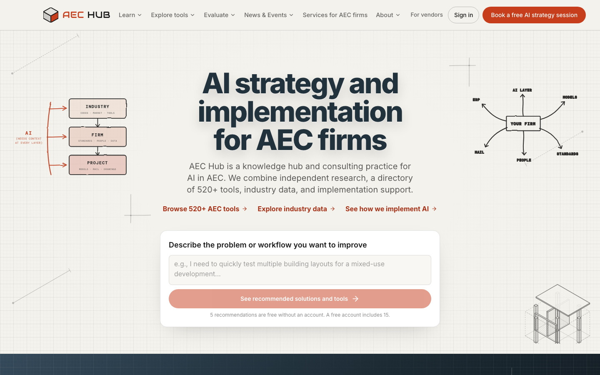
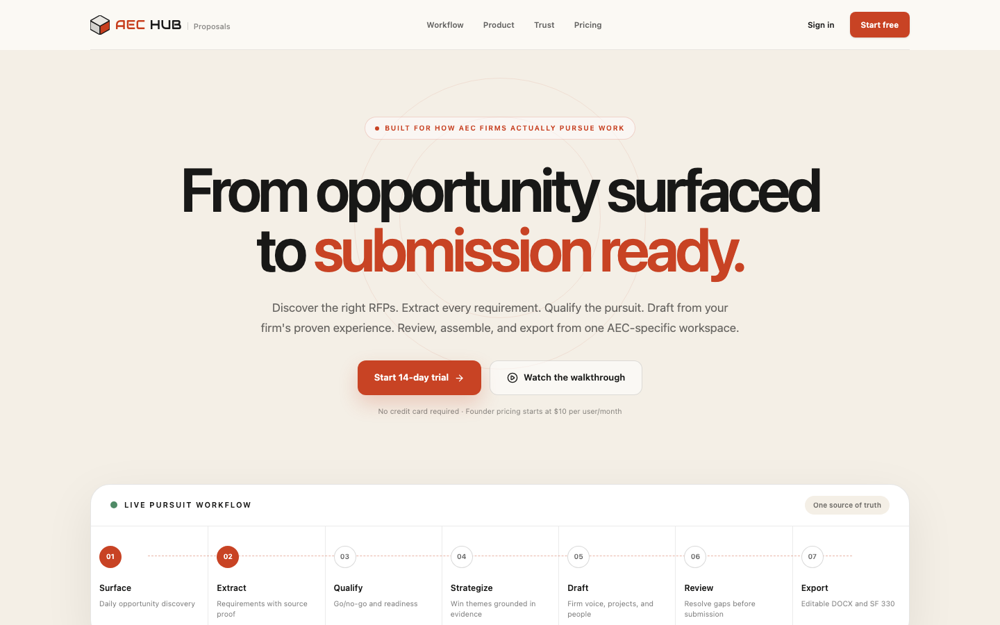
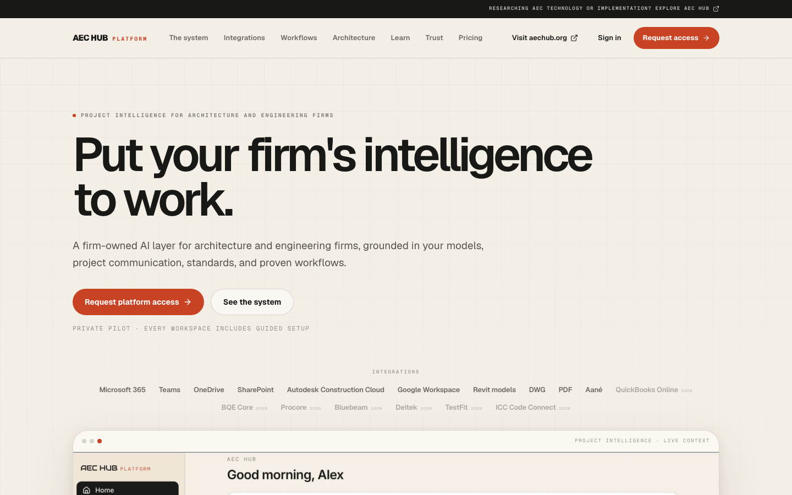
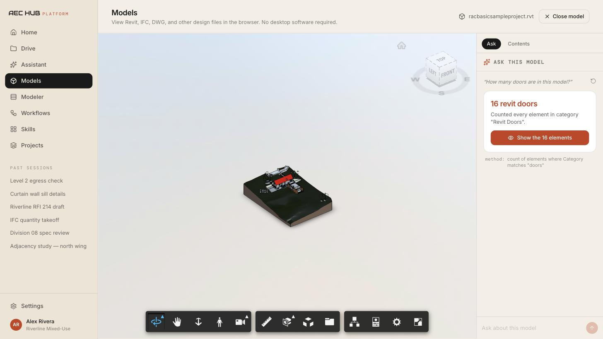

← Back to Work
AEC Hub
AI strategy, research, and software for architecture, engineering, and construction firms
Three live products
The Problem
AEC firms need help choosing and implementing AI
70% of architecture and engineering firms use AI, but 38% report a measurable return (Deltek, n=896). Firms have more than 500 tools to evaluate, and general AI models do not know a firm's projects, standards, or past proposals.
I started AEC Hub in April 2025 as a research site for AEC technology. It now includes three products: aechub.org for research, tool recommendations, and consulting; AEC Hub Proposals for pursuing public work; and the AEC Hub Platform, which connects a firm's models and project mail to AI.
Products
1
aechub.org
A knowledge hub and consulting practice. You describe a task and get recommendations from 520+ reviewed tools, then use the study guides, industry data, and readiness assessments to plan the work.
2
AEC Hub Proposals
Proposal software that finds public RFPs, extracts every requirement, and drafts from the firm's past proposals, projects, and people. A person reviews every draft before export.
3
AEC Hub Platform
A firm-owned AI workspace connected to Autodesk Construction Cloud, Revit, Microsoft 365, and Google Workspace. It is in private pilot with guided setup for each firm.
aechub.org

Task-based recommendations
You describe the workflow you want to improve, and the recommender suggests an approach and tools, or says when no tool fits. Vendor relationships do not change rankings.
Learning resources
Articles, study guides, and reports built from federal and firm data, plus the AEC news and events tracked each week.
Evaluation tools
An AI readiness score, an AI workflow audit, an RFI cost calculator, and a tracker of how foundation models perform on AEC tasks.
Strategy and implementation
Free AI strategy sessions, an ongoing strategy retainer, and implementation work that connects AI tools to a firm's existing systems.
AEC Hub Proposals

Opportunity discovery
A daily job pulls SAM.gov and other public notices into one inbox with saved watchlists, and a notice becomes a pursuit without retyping it.
Requirement extraction
Dates, page limits, forms, and evaluation criteria become a list linked to the source text. A 63,000-character sample RFP produces 386 requirements in about two minutes.
Drafting from firm evidence
Drafts use approved firm language, project experience, and staff qualifications. Facts the system cannot confirm stay flagged for a person to resolve.
Review and export
Readiness checks and review happen in one pursuit workspace, and the finished proposal exports to editable DOCX and SF 330.
AEC Hub Platform

Model queries
Teams load Revit, IFC, or DWG files, view them in the browser, and ask for counts, areas, and take-offs computed from the model elements.
Code checks
Door checks against ADA 404.2.3 and IBC 1010.1.1 show the method used and highlight the failing elements in the model.
Parametric modeler
Office test fits, modular houses, and courtyard housing update with live IBC and IRC checks, and firms can edit the templates as scripts.
Connected project mail and files
Outlook, OneDrive, SharePoint, Teams, Gmail, and Google Drive give the assistant project context, and replies it drafts are reviewed before sending.

Tech Stack
Next.js
TypeScript
Tailwind CSS
Supabase
Clerk
Stripe
Railway
Anthropic Claude
Autodesk Platform Services
Microsoft Graph
Python
Impact
520+
Tools Reviewed
Across all AEC categories
3
Live Products
aechub.org, Proposals, Platform
1000+
Monthly Users
AEC professionals
What I Learned
Long RFPs
The first requirement extractor sent 45,000-character sections to the model and failed on long RFPs. Splitting them into 12,000-character sections and streaming the responses brought a 71,000-character RFP to about two minutes.
Human review
Firms submit proposals and send project mail under their own name, so every draft goes to a person and missing facts are shown instead of filled in.
Pilot setup
The platform is sold as a guided pilot for each firm because its models, mail, and standards need to be connected before the AI gives useful answers.